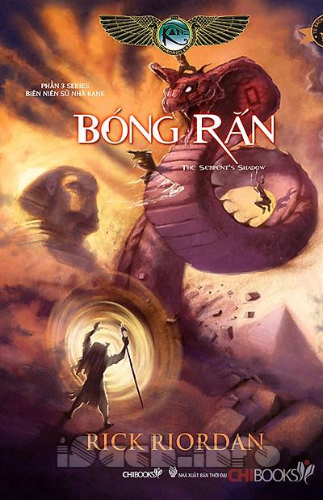

« Back
Biên Niên Sử Nhà Kane 3 - Bóng Rắn
By Rick Riordan

Giới Thiệu.
Cảnh Báo.
1.Chúng Tôi Phá Bĩnh Thiêu Rụi Một Buổi Tiệc.
2.Tôi Nói Phải Quấy Với Hỗn Mang.
3.Chúng Tôi Đoạt Được Chiếc Hộp Chẳng Có Gì.
4.Tôi Hỏi Ý Kiến Chim Bồ Câu Chiến Tranh.
5.Buổi Khiêu Vũ Với Tử Thần.
6.Chú Amos Nghịch Với Những Tượng Chiến Binh.
7.Tôi Bị Tay Bạn Cũ Bóp Cổ.
8.Em Gái Tôi, Cái Chậu Hoa.
9.Zia Giải Tán Một Trận Chiến Dung Nham.
10.Đem Con Gái Đi Theo Đến Nơi Làm Việc Hỏng Bét Cả.
11.Đừng Lo Lắng, Hãy Như Hapi.
12.Bò Mộng Với Tia La-De.
13.Trò Trốn Tìm Giao Hữu (Có Điểm Thưởng Là Cái Chết Đau Đớn).
14.Trò Vui Với Thái Nhân Cách.
15.Tôi Biến Thành Con Vượn Màu Tía.
16.Sadie Ngồi Ghế Trước (Ý Tưởng.Tệ.Hại.- Hơn.Bao.Giờ.Hết).
17.Nhà Brooklyn Tham Chiến.
18.Chàng Trai Thần Chết Đến Giải Cứu.
19.Chào Mừng Đến Nhà Cười Của Quỷ.
20.Tôi Lên Ngôi Pharaoh.
22.Điệu Walt Cuối Cùng (Lúc Này Thôi).